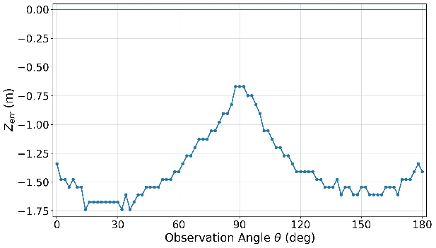

1
Pinhole initialization
YOLOv11 detects the vehicle, a classifier picks its size prior H and Ego-Net estimates the viewing angle θ. The box height gives an initial depth.
Zraw = fy H / h2D
TL;DR GEMO3D lifts a single RGB image to a 3D vehicle box by correcting pinhole depth with a class-specific rank-1 SVD model of the projection-height ratio — three 1-D curves per vehicle class, learned offline from virtual scenes, with no ground-truth depth needed at inference.
165 CARLA vehicles matched by all four compared methods.
Monocular 3D vehicle detection must infer depth from a single image. The height of a detected 2D box follows the visible silhouette, so it differs from the projected height of the vehicle’s 3D centerline — a bias that changes with viewing angle, distance and vehicle shape. GEMO3D combines learned detection, classification and orientation with camera geometry, and corrects this bias with a vehicle-specific rank-1 projection-height ratio model estimated from the viewing angle and initial pinhole depth. The corrected depth drives 3D box reconstruction with ground-plane and reprojection constraints, without ground-truth depth at inference.

YOLOv11 detects the vehicle, a classifier picks its size prior H and Ego-Net estimates the viewing angle θ. The box height gives an initial depth.
The 2D box follows the silhouette, not the 3D centerline. A class-specific rank-1 SVD model predicts the ratio rc ≈ h2D / h3D,proj from θ and Zraw — see the model below.
Back-projection places the box at the corrected depth, a ground-plane constraint fixes its bottom center, and reprojection aligns it with the 2D detection.
Core contribution
Instead of regressing a depth error, GEMO3D models why pinhole depth is biased — the ratio between the detected box height and the ideal projected height of the 3D centerline — and compresses that ratio surface with a low-rank (rank-1) SVD.

The raw error is not a fixed offset: it grows with distance (Fig. 3) and depends on θ (Fig. 4). Because projected height is inversely proportional to depth, the scale-free ratio captures the bias directly:
Zraw = fyH / h2D therefore over- or under-estimates depth by exactly this factor.
Blender renders each vehicle type over a grid of viewing angles θ and center depths. YOLOv11 gives h2D; projecting the 3D centerline gives h3D,proj.
For class c, ratios are arranged on the angle × depth grid:
Depth is mapped to ρc(Z) ∈ [−1, 1]. The per-angle mean bc(θ) is removed so the SVD models only the depth-dependent change:
Keeping only the first singular component gives a compact low-rank surface:


bc(θ) is nearly flat, while |ac(θ)| changes strongly with direction: one shared depth curve, scaled per angle, reconstructs the whole ratio surface (manuscript Fig. 5).
Energy of the first singular component, EV1,c = σ12 / Σkσk2 (σ1 / σ2: Compact 5.157 / 0.682, Sedan 7.633 / 0.658, SUV 6.226 / 0.370; manuscript Table 1).
Each class stores only Mc = {bc, ac, Cc, Θc, Zmin,c, Zmax,c} — three 1-D curves, interpolated. The predicted class, θpred and Zraw look up the ratio:
Ground-truth depth is used only to build the model offline, never at inference.

 3D box2D detection
3D box2D detection


Blue: GEMO3D prediction. Bird’s-eye view: orange dashed ground truth, 1 m grid. Samples are the objects nearest each distance, not selected by error.
165 vehicle instances matched by GEMO3D, MonoAMNet, MonoDGP and MonoDETR in CARLA.
| Method | Depth RMSE (m) ↓ | Yaw error (°) ↓ | 3D center error (m) ↓ | BEV IoU ↑ | FPS ↑ |
|---|---|---|---|---|---|
| MonoAMNet | 5.58 | 18.97 | 2.76 | 0.46 | 40.23 |
| MonoDGP | 1.40 | 1.23 | 1.25 | 0.46 | 24.71 |
| MonoDETR | 0.33 | 1.73 | 0.28 | 0.70 | 21.34 |
| GEMO3D ours | 0.27 | 2.12 | 0.25 | 0.82 | 31.12 |


5 m depth bins; error bars are the stored 95% confidence intervals of the mean.
CSV files are the stored full-precision summaries; recomputed values can differ from the manuscript table in the second decimal.
@misc{chang2026gemo3d,
title={GEMO3D: Monocular 3D Vehicle Detection with Deep-Learning Perception, Camera Geometry and Projection-Height Ratio Compensation},
author={Chang, Yu-Chiao and Kuo, Chunghui and Yang, Chieh-Lun and Chang, Ing-Chau},
year={2026},
note={CVGIP 2026, SS09-08}
}